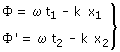
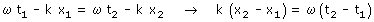

Considera una onda de fase: ωt - kx Calculamos la fase espacio-temporal en (x1, t1) y (x2, t2)  Igualando las fases:  Si t2 > t1 el segundo miembro será positivo y por tanto el primer miembro tendrá que ser positivo también lo que implica x2 > x1 La onda se propaga en sentido de x creciente |